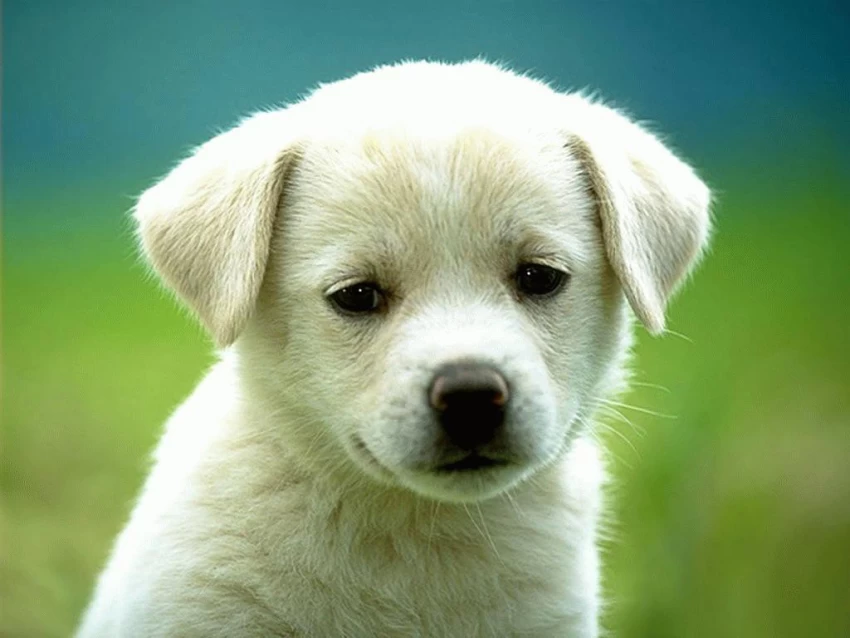

Amazing Article
Florin PopPuppies are born after an average of 63 days of gestation, puppies emerge in an amnion that is bitten off and eaten by the mother dog. Puppies begin to nurse almost immediately. If the litter exceeds six puppies, particularly if one or more are obvious runts, human intervention in hand-feeding the stronger puppies is necessary to ensure that the runts get proper nourishment and attention from the mother. As they reach one month of age, puppies are gradually weaned and begin to eat solid food. The mother may regurgitate partially digested food for the puppies or might let them eat some of her solid food.The mother usually refuses to nurse at this stage, though she might let them occasionally nurse for comfort.
My Dog
Puppies are born with a fully functional sense of smell. They are unable to open their eyes. During their first two weeks, a puppy's senses all develop rapidly. During this stage the nose is the primary sense organ used by puppies to find their mother's teats, and to locate their littermates, if they become separated by a short distance. Puppies open their eyes about nine to eleven days following birth. At first, their retinas are poorly developed and their vision is poor. Puppies are not able to see as well as adult dogs. In addition, puppies' ears remain sealed until about thirteen to seventeen days after birth, after which they respond more actively to sounds. Between two and four weeks old, puppies usually begin to growl, bite, wag their tails, and bark.